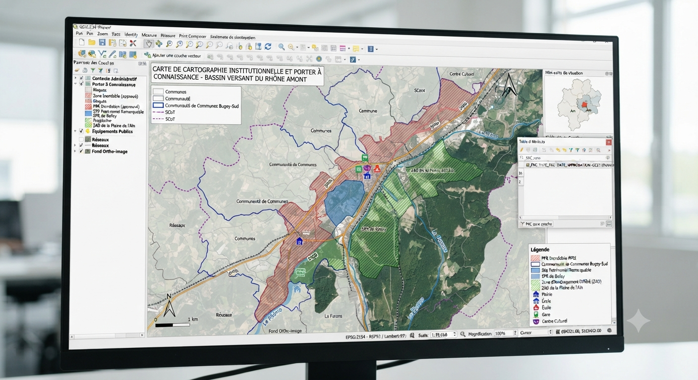
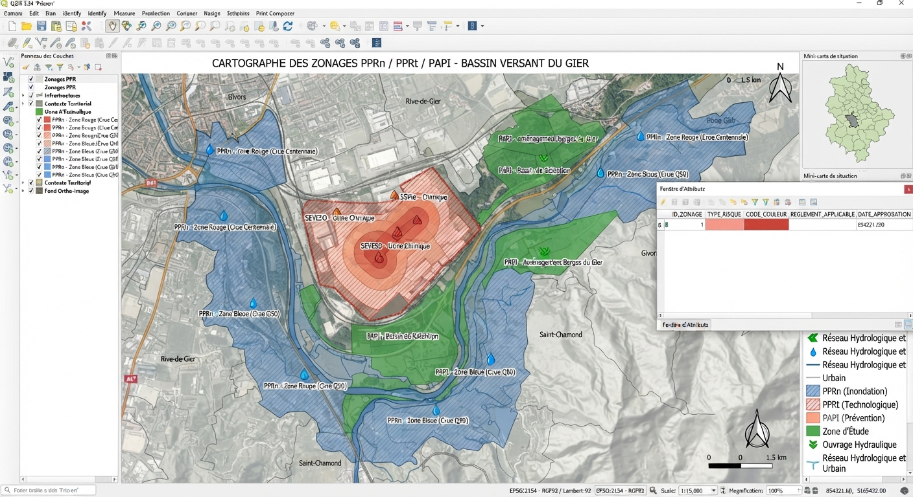
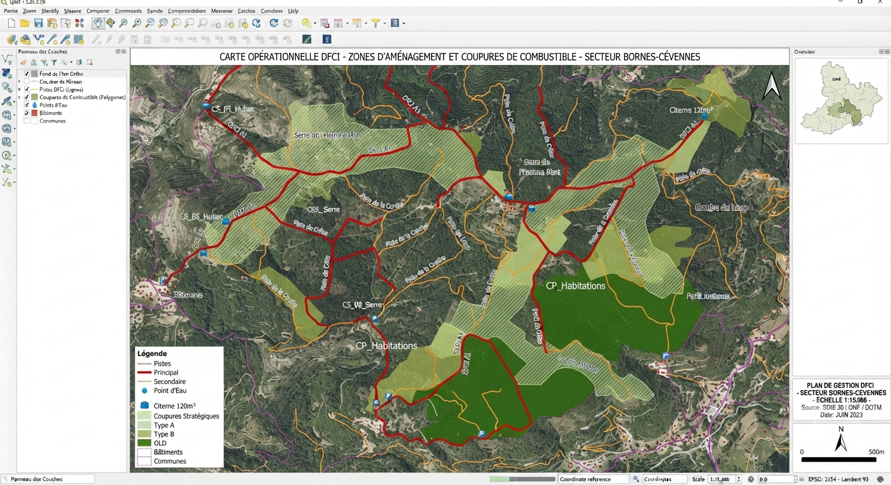
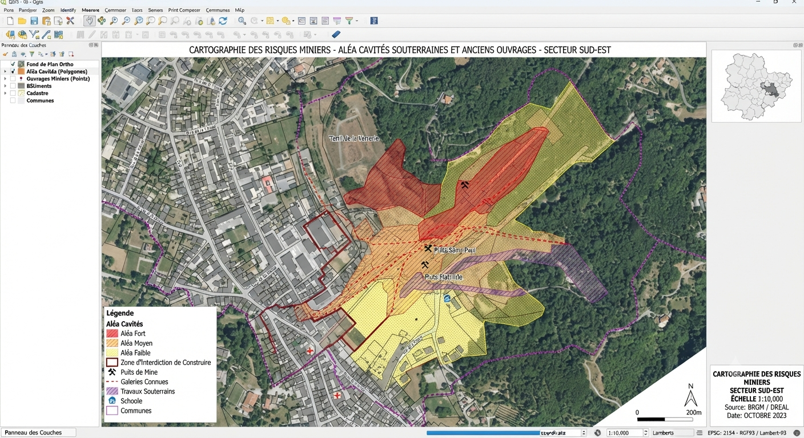
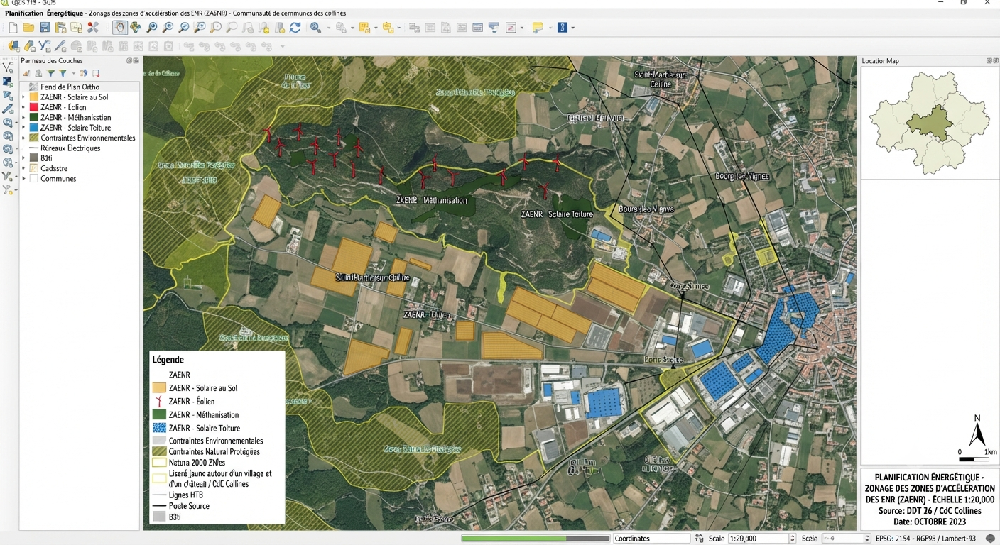
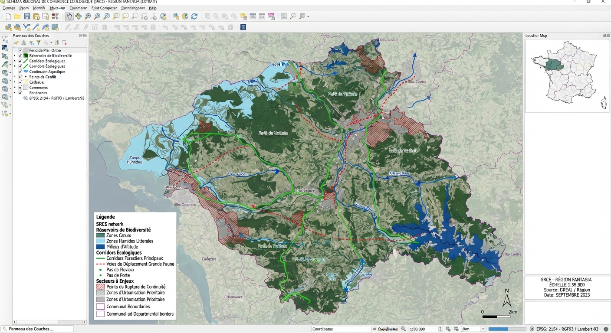
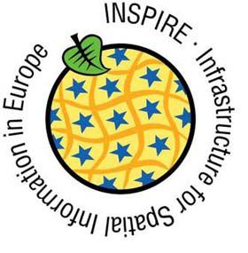
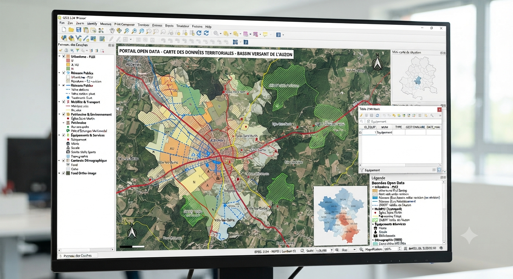

Préfecture, DDT(M), DREAL, Conseil départemental, Conseil régional, opérateurs publics, commissions : vous pilotez ou contrôlez des obligations cartographiques qui dépassent l'échelle communale, prévention des risques, énergie, biodiversité, ouverture des données. Nous produisons la donnée de référence sur laquelle ces politiques s'appuient.
Les obligations pilotées à l'échelle de l'État ou des grandes collectivités (PPR, DFCI, ZAEnR, INSPIRE...) ont un point commun : elles doivent ensuite être reprises, sans erreur, par des dizaines de communes et d'EPCI qui n'ont pas toujours l'expertise SIG pour les vérifier.
Nous produisons ou contrôlons cette donnée de référence (cartographie technique, mise en conformité CNIG, préparation des flux INSPIRE) pour qu'elle soit directement réutilisable en aval.

Ce périmètre couvre aussi bien les services de l'État sur le terrain que les grands opérateurs publics et les commissions de contrôle.
Préfecture, DDT(M), DREAL, ARS, SDIS, DGFIP : les relais territoriaux de l'État qui élaborent et contrôlent les documents de référence.
Opérateurs télécoms (déploiement 5G/fibre), gestionnaires de réseaux d'énergie, France Travail, bailleurs sociaux : des besoins géographiques propres à leurs missions de service public.
CADA, CNIG, GEODERIS, Comité régional de l'énergie : les instances qui valident la conformité ou arbitrent les recours.
Ces documents, élaborés par l'État, s'imposent ensuite aux communes via leurs documents d'urbanisme.

Cartographie des zones d'aléa (inondation, incendie, retrait-gonflement des argiles) annexée aux documents d'urbanisme.

Cartographie des pistes d'accès, coupures de combustible et points d'eau dans les massifs classés à risque.

Cartographie des cavités souterraines et zones d'affaissement à porter à connaissance des communes concernées.

Cartographie des zones prioritaires pour l'implantation de projets d'énergies renouvelables, transmise aux communes.

Référentiel régional de biodiversité auquel doivent se conformer les PLU et SCoT du territoire.

Interopérabilité et accessibilité de toutes les données géographiques environnementales via des flux standards (WMS, WFS).

Publication gratuite des bases de données géolocalisées pour les collectivités de plus de 3 500 habitants.
Décrivez votre politique publique, nous vous proposons la méthode de production adaptée.